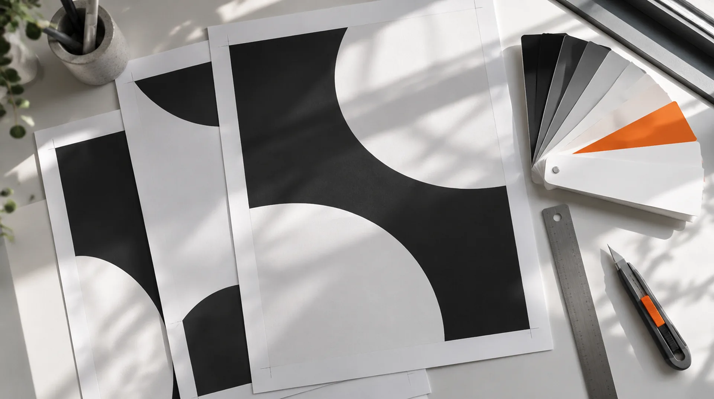
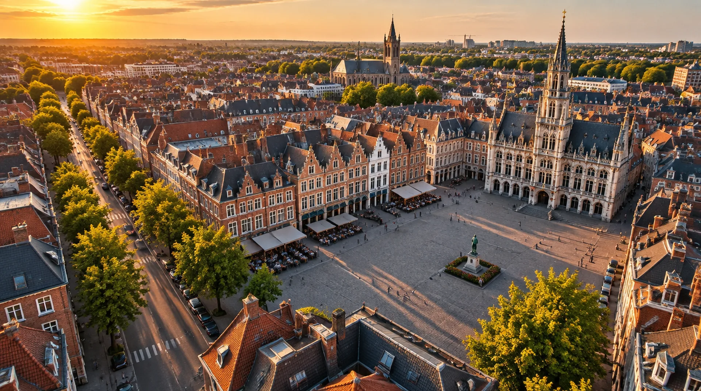
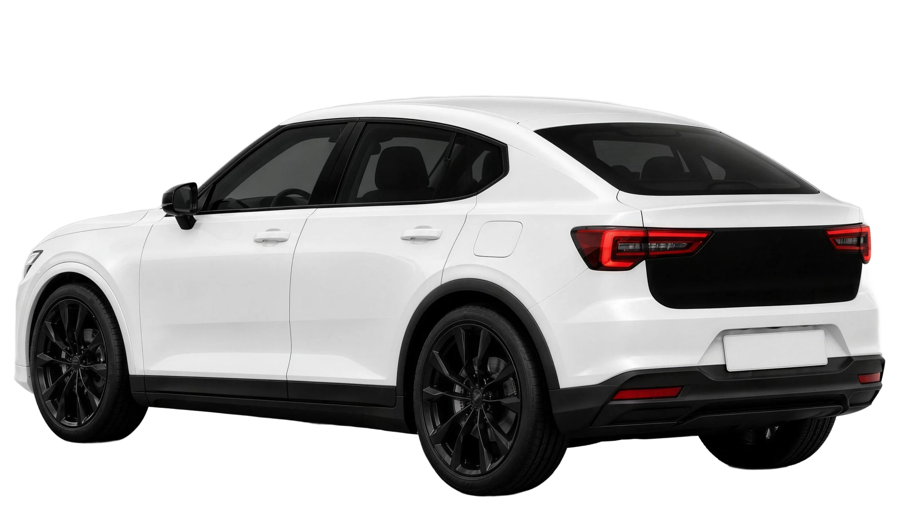
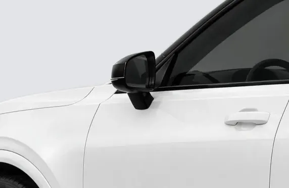
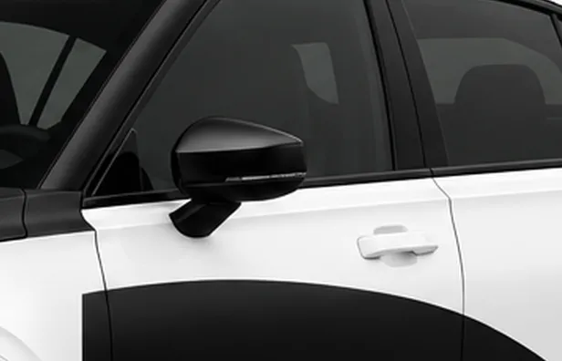
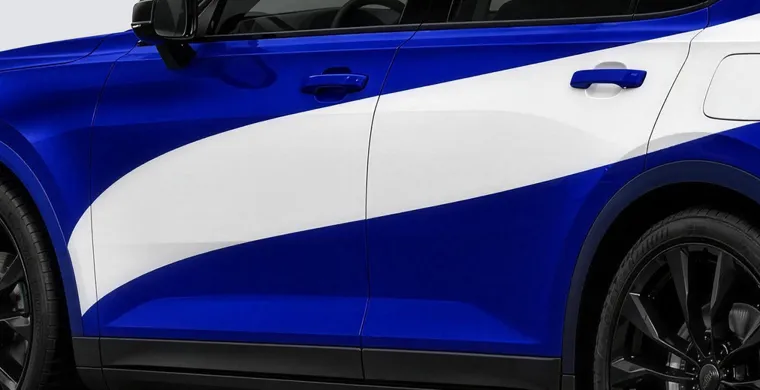
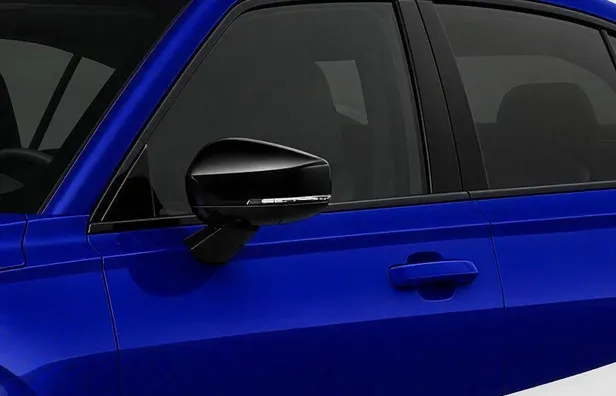

Un message clair
Un visuel conçu pour être reconnu vite, en mouvement comme à l'arrêt.

Des voitures qui circulent déjà. Une campagne conçue pour elles. Votre marque présente dans les villes et les zones qui comptent pour vous.
Créer ma campagneVoir les formats01 / Le principe
adsmove transforme des trajets du quotidien en présence publicitaire. Nous imaginons le visuel, réunissons les véhicules, organisons la pose et accompagnons la campagne jusqu'au bilan.
Un visuel conçu pour être reconnu vite, en mouvement comme à l'arrêt.
Des conducteurs et des formats retenus pour le projet, selon les disponibilités.
Des secteurs définis ensemble avant le lancement, puis confirmés selon le réseau mobilisable.
02 / Votre message
Une voiture ne se lit pas comme une affiche immobile. Le nom, le contraste et l'idée principale doivent fonctionner en quelques secondes.
Une idée centrale. Nous partons de votre objectif : lancement, présence locale, ouverture d'un lieu ou visibilité de marque.
Un design adapté. Nous créons le visuel ou adaptons vos éléments à la forme et aux surfaces de chaque véhicule.
Une validation réelle. Vous voyez la proposition sur une maquette de voiture avant impression et pose.

03 / Nos véhicules
Chaque campagne se construit autour d'un nombre de voitures, d'une durée et de secteurs de circulation. Les véhicules retenus sont confirmés avant la mise en place.

A / Trajets quotidiens
Des conducteurs dont la voiture circule déjà dans leur environnement habituel. Idéal pour installer une présence locale dans la durée.
B / Mobilité professionnelle
Des véhicules présents au fil des courses et des arrêts, selon les campagnes ouvertes et les autorisations applicables.
C / Plusieurs véhicules
Des véhicules d'entreprise ou de partenaires, pour une présence coordonnée, selon les modèles et les accords nécessaires.
Le réseau et les villes couvertes sont définis au cas par cas : aucun volume de véhicules n'est annoncé d'office.
04 / Vos zones
Votre objectif n'est pas forcément d'être partout. Nous définissons avec vous les lieux où une présence est utile, puis étudions les voitures disponibles pour y faire circuler le visuel.

Une ville, un ensemble de communes, les environs d'un point de vente ou une zone plus large : tout commence par votre brief.
Le choix final dépend des véhicules mobilisables, de la durée et du format retenu.
Les secteurs convenus et la méthode de compte rendu sont précisés avant le lancement.
Les secteurs présentés dans une proposition sont confirmés selon les véhicules mobilisables.
La zone arrière et les rétroviseurs.
Tarif sur devis, selon le nombre de voitures, la durée et les zones.





Les portes, l'arrière, les rétroviseurs et le capot.
Tarif sur devis, selon le nombre de voitures, la durée et les zones.



Toute la voiture, hors vitres.
Tarif sur devis, selon le nombre de voitures, la durée et les zones.




06 / De l'idée à la route
Une campagne sur voiture, c'est bien plus qu'un adhésif. Nous coordonnons la création, les conducteurs, la production et la mise en circulation.
Vous nous présentez votre message, vos zones, le calendrier souhaité et le nombre de véhicules envisagé.
Nous étudions les véhicules et définissons le format, la durée, le visuel et les modalités de campagne.
Une fois le visuel validé, nous organisons l'impression, les rendez-vous et la pose professionnelle.
Les véhicules circulent pendant la période convenue. La campagne se termine par un retrait organisé et un bilan.
07 / Le suivi
Une belle voiture ne suffit pas : vous devez aussi pouvoir suivre l'exécution de votre campagne. Les informations disponibles et leur fréquence sont définies avec vous avant le lancement.
01 / Pendant
Suivez l'avancement, les véhicules mobilisés et les informations de diffusion effectivement collectées pour la campagne.
02 / Après
En fin de campagne, un récapitulatif rassemble les éléments validés, les zones couvertes et les photos disponibles.
Le suivi repose sur des déclarations et validations ponctuelles de distance et de zones. Pas de géolocalisation permanente des personnes, et aucune donnée par conducteur dans vos rapports.
08 / En pratique
adsmove travaille en Belgique. Les villes et les secteurs précis sont définis avec vous, puis confirmés selon les véhicules et conducteurs mobilisables à la période souhaitée.
Le dispositif se construit sur mesure : le nombre de véhicules dépend de votre objectif, du format, du territoire et du budget, puis des disponibilités confirmées.
La durée est fixée dans la proposition, selon votre besoin et les possibilités de production et de mobilisation. La date de départ suit la validation du dispositif.
Nous concevons le visuel ou adaptons vos fichiers. adsmove coordonne ensuite l'impression, la pose par des professionnels et le retrait en fin de campagne, selon le devis.
Oui, c'est possible à étudier : modèles, état des véhicules, disponibilité et autorisations nécessaires, notamment pour un véhicule loué ou en leasing.
Le devis dépend du nombre de voitures, du format, de la durée, des zones et des besoins de création et de production. Tout est détaillé avant le moindre engagement.
Parlez-nous de votre projet, même sans avoir choisi la ville, le nombre de voitures ou le format.